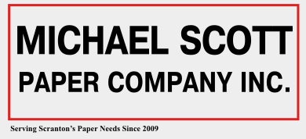

Sales Representative -
Dunder Mifflin Paper Company,
Inc.
Sales Representative -
Dunder Mifflin Paper Company,
Inc.Sell paper products to organizations, businesses or government agencies.
City: Brasília
Phone: (61) 9 5555-9999
Email: meu@email.com
A TI position on Dunder Mifflin Paper Company, Inc.
MBA in Management
University of Scranton
Web Developer Full Stack
Programador BR
Sales Representative -
Dunder Mifflin Paper Company,
Inc.
Sell paper products to organizations, businesses or government agencies.
 Assistant
(To The) Regional Manager -
Michael Scoot Papper Company
Handling administrative duties in support of the Regional Managers
specific responsibilities like an executive secretary.